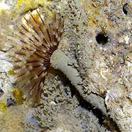
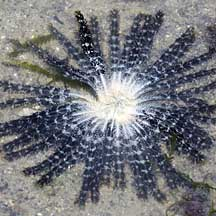
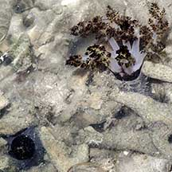
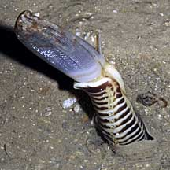

|
|
| Animals
with a ring of feathery tentacles or arms How to tell them apart? updated Apr 2020 Several animals with a ring of feathery tentacles are sometimes confused for one another. Here's how to tell them apart. |
 |
 |
 |
| Fanworms have a fan of feathery tentacles that sticks out of the tube while the segmented body remains hidden. | Feather stars have 10 or more feathery arms arranged around a small central disk. | Sea cucumbers have many feathery tentacles surrounding their mouth. Often, only the tentacles stick out while the body of the sea cucumber is buried or hidden in a crevice. |
| Fanworms build tubes to hide in and usually do not move once they settle down. | Feather stars can move about, some can even swim. | Sea cucumbers can move but most usually stay put once they find a safe hiding place from which they can feed. |
| Fanworms can retract their tentacles leaving only their soft limp tubes visible. | Feather stars may curl up their arms, but they don't build tubes to hide in. | Sea cucumbers can tuck their tentacles into their bodies. |
| Fanworms may be found on coral rubble and even among living hard corals. They are quite common on our undisturbed shores. | Feather stars are only commonly seen on remote and undisturbed shores. | Sea cucumbers are common on all our shores in a wide range of habitats. |
| Fanworms belong to Phylum Annelida, Class Polychaeta and most of those we see on the shores belong to Family Sabellidae. | Feather stars belong to the Phylum Echinodermata, Order Crinodea. | Sea cucumbers belong to the Phylum Echinodermata, Order Holothuroidea. |
| More comparisons |


|
 Fanworms have a segmented body and the fan may appear petal-like when stuck together at low tide. |
| how to tell apart bristley animals |